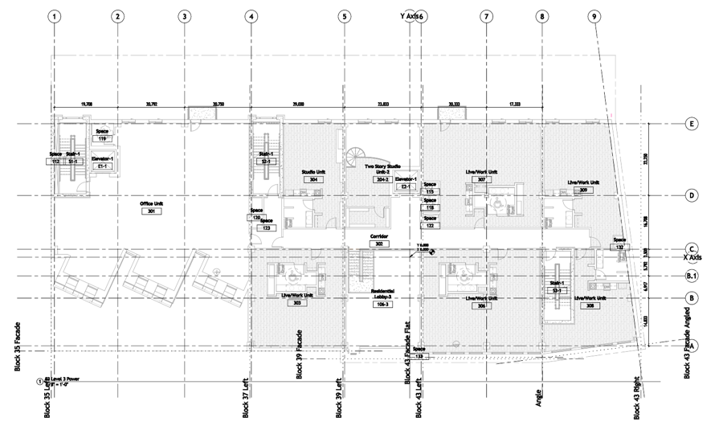

Project Workshop for AEC Teams
A short, practical walkthrough for architects, designers, and MEP teams who want to start using AI in a real project workflow.
In AEC, every job starts with a project. This page follows the same logic in an AI project workspace: create a project, add instructions, add documents, and then start chats that stay grounded in the project context.
What this covers
- How to set up a project workspace for a commercial AEC job
- How to add reusable project instructions so every chat starts from the right context
- How to upload a BIM Execution Plan and ask action-focused kickoff questions
- What Skills, MCP servers, and vision models unlock for later workflows
Device note
You can follow along on a phone for the basics: reading, copying prompts, and understanding the flow. Some steps are easier on desktop, especially file uploads and advanced tool connections.
Step 1 · Create the Project
Start with the project container first. In AEC, that mirrors the way teams organize work from kickoff onward.
Note: Sharing projects
Once the setup is working well, projects can be shared with others on the team. Team members can be invited to use, edit, and contribute to the project. Make sure the instructions and reference files stay accurate as the project evolves.
Step 2 · Add Project Instructions
This becomes the persistent context for the project, so every new chat starts with the same expectations.
This version is tuned for a commercial AEC project with an architect-led audience, while still supporting MEP coordination and document review.
Commercial AEC Project Instructions
You are supporting the startup of a commercial AEC project. Assume the user is part of an architect-led team working with consultants across architecture, interiors, structural, and MEP disciplines.
Prioritize practical, project-ready outputs over generic explanations. Keep responses concise, structured, and action oriented.
When reviewing documents, drawings, or notes:
- Identify key project requirements, decisions, risks, open questions, and coordination items.
- Highlight anything that should be discussed in kickoff, design coordination, BIM execution, or scope clarification meetings.
- Separate confirmed information from assumptions.
- Call out missing information that the team should request early.
When helping generate project materials:
- Use a professional tone suitable for project teams, owners, architects, and consultants.
- Prefer short agendas, checklists, decision logs, action item lists, and meeting-ready summaries.
- Assume the project may already have an architectural floor plan that MEP and other disciplines will build from.
- Consider BIM coordination, drawing standards, document control, consultant alignment, permitting, schedule, and scope management.
Do not invent project facts. If information is missing, say what is unknown and recommend the next question or document to review.
Step 3 · Add a Document
Add a real project document so the chats are based on actual source material rather than generic prompting.
Workshop document
Use the BIM Execution Plan as the sample project document. This shows attendees how quickly an AI app becomes more useful when it has real project content to work from.
Step 4 · Start a Chat
Use a short prompt that turns the uploaded project context into something immediately useful for the team.
Kickoff Meeting Prompt
Using the project instructions and the BIM Execution Plan in this project, create a short and action-focused kickoff meeting agenda for a commercial AEC project startup.
Keep it concise and organized for a live meeting.
Include:
- project goals and scope alignment
- BIM roles, responsibilities, and coordination expectations
- immediate risks or missing information that should be clarified early
- the top action items to assign after kickoff
Format the output as a clean agenda with short bullets and an action item list.
Why start here
A well-structured project can generate useful outputs fast. One document plus one instruction set is enough to create a focused kickoff agenda or early risk summary.
Step 5 · Skills & MCP Servers
Use this section as a reference for what can be added after the base project setup is working.
Creating a reusable skill
Skills can be created in Claude to encapsulate project instructions or workflows. Here is how to build one from your current setup:
- Go to the Customize menu in Claude and select Skills
- Choose "Add skill from browser" or "Create skill"
- Use the prompt below and let the skill creator assist you
Copy the prompt and add any context from your current project setup:
can you create a skill from this project to be used for other project startup tasks?
/skill-creator
Vision Models · Optional
Use this section later if you want to test plan reading, visual reasoning, and structured design output.

Vision Model Prompt
Can you act as an electrical designer and take this architecture background and lay out the electrical outlets where they need to be on this view based on the walls and room types. Follow NEC standards for electrical outlet and device layouts as well.
Add symbols on the walls for the devices and note their coordinates in relation to the drawing. The output will be used to import into Revit with a plugin to do the layouts of the devices. Ensure accuracy in the layouts as well. Do not worry about adding the coordinates to the view, just add the device where it needs to be. Add any electrical receptacles per code on this view for now. It needs to be an overlay on the image, and color the electrical outline in a color that we can see, not black, but in green so we can see easily. Here is the view again in plan.
Here is the floor plan view that we need device layout on as well. Instead of adding the coordinates on the sheet, just output the JSON related to each device, then we can use that to import into Revit. The only thing we want to see on the plan is the device and ID that will show up in the JSON too, and the details in the JSON can be there for coordinates and the height of the device as well. Follow ADA for device layout and height requirements.
Next Steps
Once the base setup works, it becomes a reusable project template that can support kickoff planning, document review, coordination prep, and follow-on automation.
Build on the base setup
- Create one real project in your preferred AI app
- Add one reusable instruction set for your team
- Upload one real project document and ask for a kickoff agenda or risk summary
- Add shared prompts, reference files, or tool connections only after the core workflow is working well